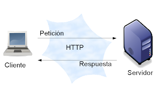

Arquitectura Cliente/Servidor en Desarrollo Web
La arquitectura cliente/servidor "es un modelo de diseño de software que separa las tareas entre los proveedores de recursos o servicios, llamados servidores, y los solicitantes de esos recursos, llamados clientes".
En otras palabras es un enfoque que permite separar la interfaz de usuario, del almacenamiento de datos y/o manejo de los mismos
para poder delegar estas dos funcionalidades a equipos diferentes y asi mejorar la eficiencia y calidad de cara al usuario final.
apesar de lo anterior mencionado no basta con desarrollar un cliente y un servidor, sino que es necesario establecer un protocolo de comunicación entre ambos.
debido a que ambos son dependientes uno del otro un cliente pierde sentido que sea amigable al usuario sino tiene utilidad y un servidor o base de datos no puede ser utilizador sin un cliente que lo solicite.
por ende es importante esta arquitectura cliente/servidor para gestionar de mejor manera un proyecto web.
Ventajas mencionadas
- Escalabilidad: Permite que diferentes partes de la aplicación se escalen de manera independiente.
- Mantenimiento: Facilita el mantenimiento y actualización de la aplicación al separar las responsabilidades.
- Interoperabilidad: Facilita la integración con otros sistemas y tecnologías.
- Flexibilidad: Permite realizar cambios en la aplicación sin afectar a todo el sistema.

Diseño centrado en el usuario
El diseño centrado en el usuario es un enfoque de diseño que enfocado en las necesidades,
limitaciones y circunstancias de los usuarios o consumidores finales en la etapa del proceso de diseño. Para esto es se investiga y comprende a los usuarios,
y sus necesidades siendo necesario realizar pruebas de diseño para garantizar que el producto final sea intuitivo, estético y fácil de usar.
para lograr este fin dependiendo del sistema o lenguaje de programación utilizado, se pueden utilizar diversas técnicas y herramientas para el diseño grafico para el usuario:
- En el caso de una pagina html se utiliza css y javascript para mejorar la interactividad y el diseño visual.
- En python, se pueden utilizar bibliotecas como Tkinter o PyQt para crear interfaces gráficas de usuario (GUI) que sean atractivas y funcionales.
- En Java, se pueden utilizar bibliotecas como Swing o JavaFX para crear aplicaciones de escritorio con interfaces gráficas de usuario.
En resumen el diseño cumple un papel fundamental en el desarrollo de aplicaciones y paginas web ya que busca crear un entorno mas amigable para el usuario y que brinde una experiencia mas amena al usar la app.
La importancia de la investigación en el entorno para el análisis de requisitos.
La investigación del entorno es crucial para comprender el contexto en el que se utilizará la aplicación o sistema.
Esto incluye muchos factores tales como el uso que le dara el usuario,las condiciones y/o limitaciones fisicas y mentales
Ademas es importante considerar el publico objetivo y sus características e intereses, entornos de Ejemplo de ello son:
Edad
Género
Ubicación geográfica
Se pueden considerar elementos culturales como música al igual que el idioma y costumbre locales al igual que publicidad util para el entorno cultural.
Habilidades tecnológicas
pueden utilizar recursos como tutoriales, entornos de discusión y foros de ayuda.
Para concluir, la investigación del entorno y el análisis de requisitos son fundamentales para el diseño enfocado en el usuario. Al comprender las características y necesidades de los usuarios, se pueden crear aplicaciones y sistemas más efectivos y que les resulten de mas utilidad dependiendo del usuario.
¿Qué importancia tiene la investigación en el territorio para el análisis de requisitos y especificaciones técnicas en programación web?
Al haber en ocasiones una gran brecha en los conocimientos informáticos de las personas por territorios,
el investigar las necesidades y capacidades de las personas a las cuales cumplen como público objetivo de un proyecto web,
es importante porque permite adaptar las interfaces, idiomas y capacidades del usuario final hablando a nivel de cliente,
Según lo dicho por Hosting, S. W. (2024) “Los sitios web dinámicos muestran a los usuarios contenido diferente basado en sus preferencias o comportamiento.
Por ejemplo, el sitio puede mostrar contenido en diferentes idiomas dependiendo de la ubicación o zona horaria del usuario.” Por otro lado, a nivel de servidor es necesario saber qué información es útil almacenar a raíz de las necesidades de cada territorio.
Referencias bibliográficas APA 7.0
- Arquitectura Cliente-Servidor. (s/f). Reactiveprogramming.io. Recuperado el 24 de agosto de 2025, de https://reactiveprogramming.io/blog/es/estilos-arquitectonicos/cliente-servidor
- Granollers, T. (2012). Diseño de sistemas interactivos centrados en el usuario . Editorial UOC. (Pág. 23 a 49) https://elibro-net.bibliotecavirtual.unad.edu.co/es/ereader/unad/56326?page=24
- Hosting, S. W. (2024, diciembre 3). Sitio web dinámico: qué es, cómo funciona y cómo crear uno. SiteGround. https://www.siteground.es/kb/sitio-web-dinamico/
- Schiaffarino, A. (2019, marzo 12). Modelo cliente servidor. Infranetworking. https://blog.infranetworking.com/modelo-cliente-servidor/